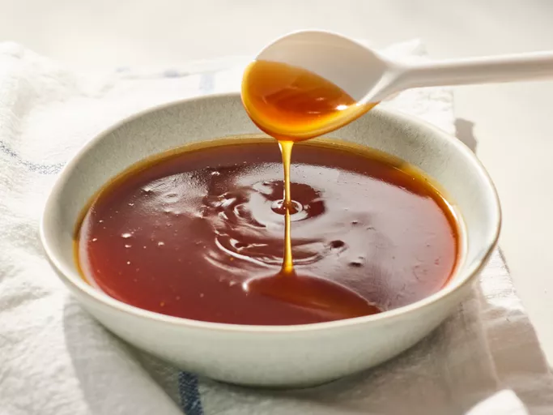
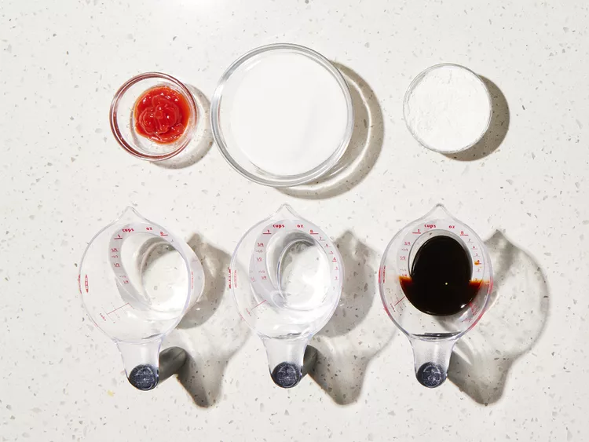

Sweet and Sour Sauce

How to Make Sweet and Sour Sauce
Sweet and sour sauce is a condiment, commonly used in Asian cuisines, that combines (you guessed it!) sweet and sour flavors.
It can be used as a dipping sauce, a glaze, or as an ingredient in marinades and so much more.
Sweet and sour sauce is commonly associated with sweet and sour chicken, a staple on Chinese-American menus.
Ingredients
- ¾ cup white sugar
- ⅔ cup water
- ⅓ cup white vinegar
- ¼ cup soy sauce
- 2 tablespoons cornstarch
- 1 tablespoon ketchup
Steps
- Gather all ingredients.

- Place sugar, water, vinegar, soy sauce, cornstarch, and ketchup in a medium saucepan and bring to a boil. Stir continuously until mixture has thickened.
- Enjoy!